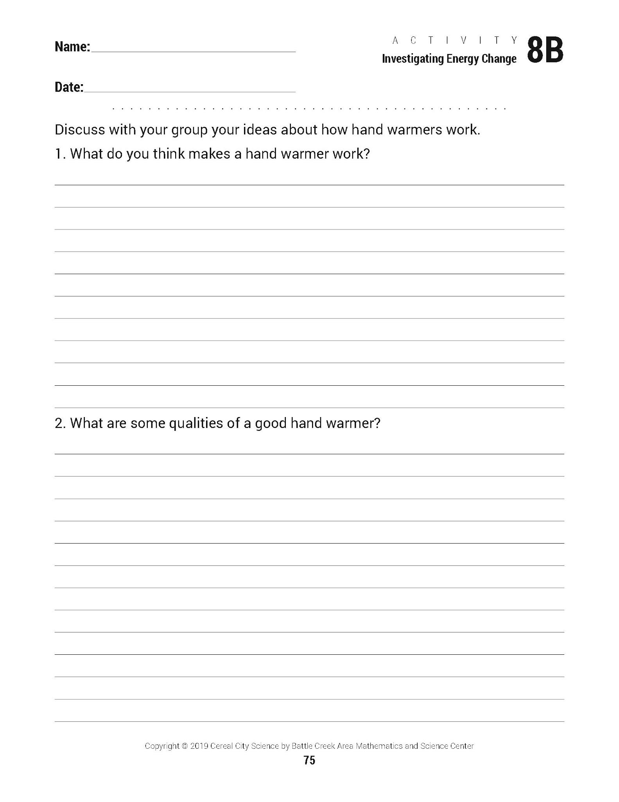
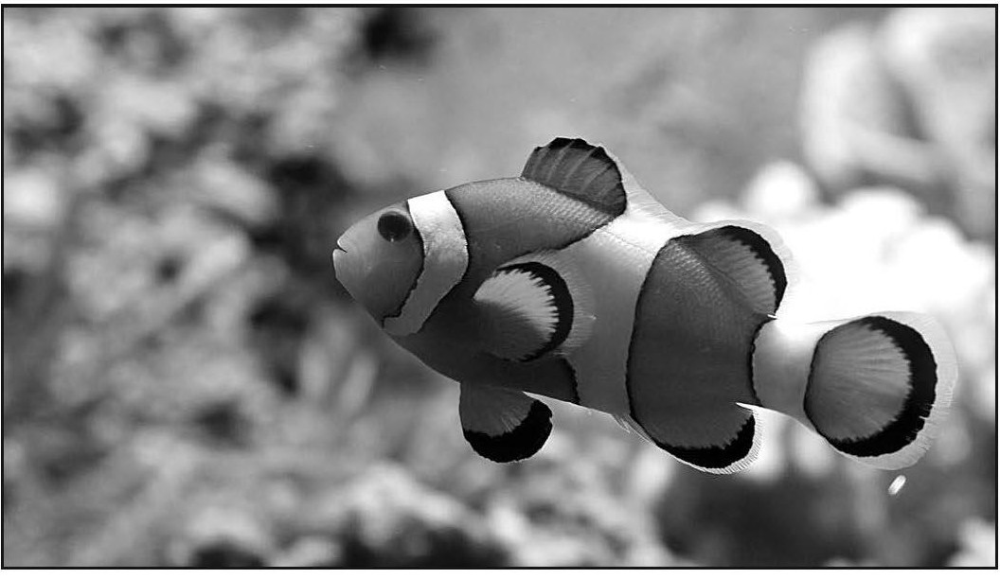
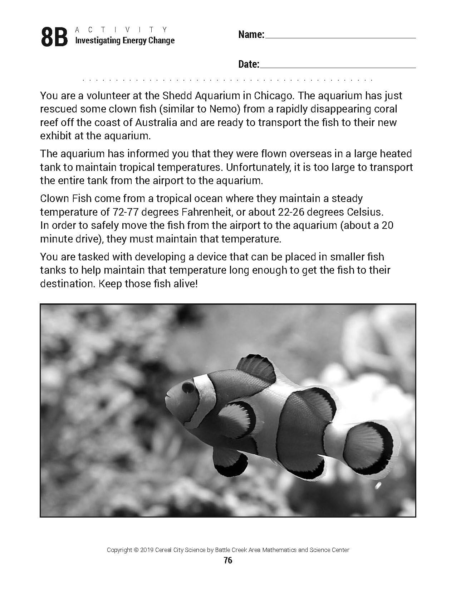
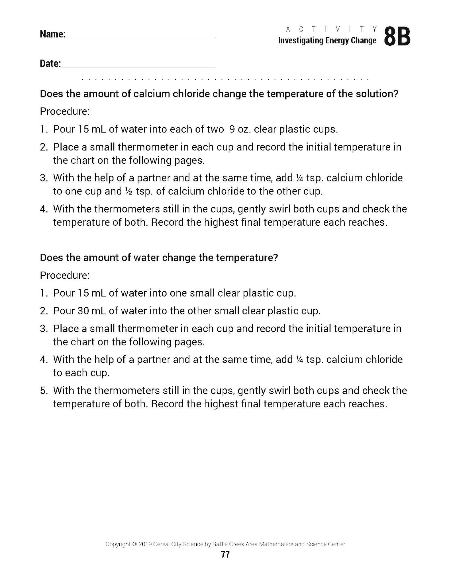
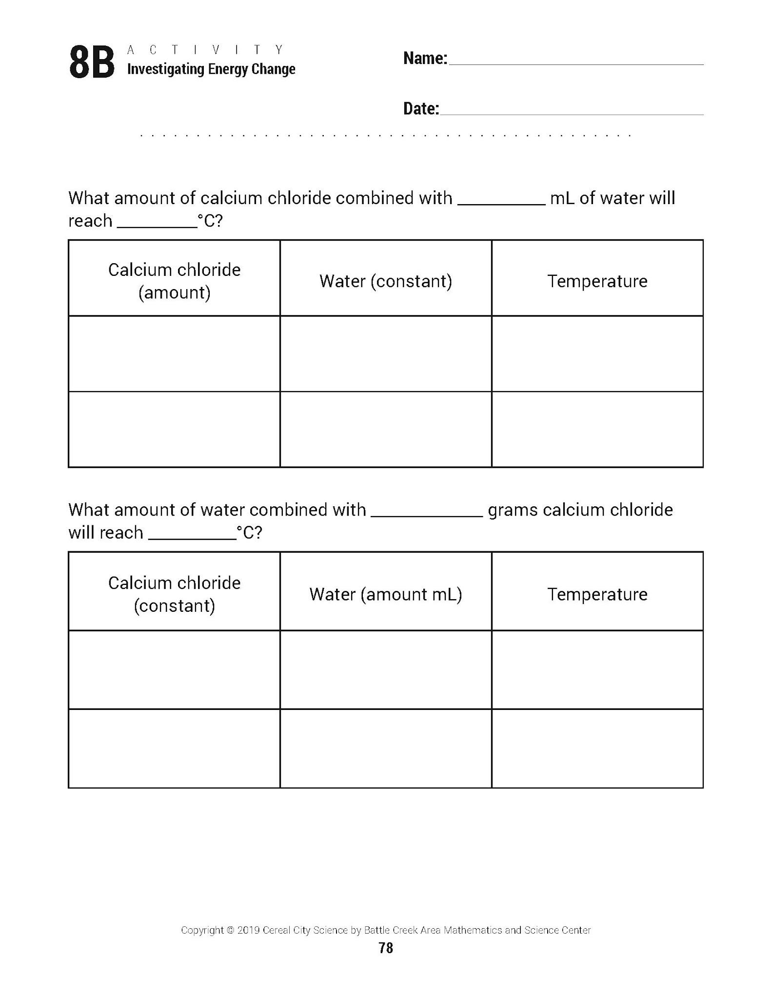
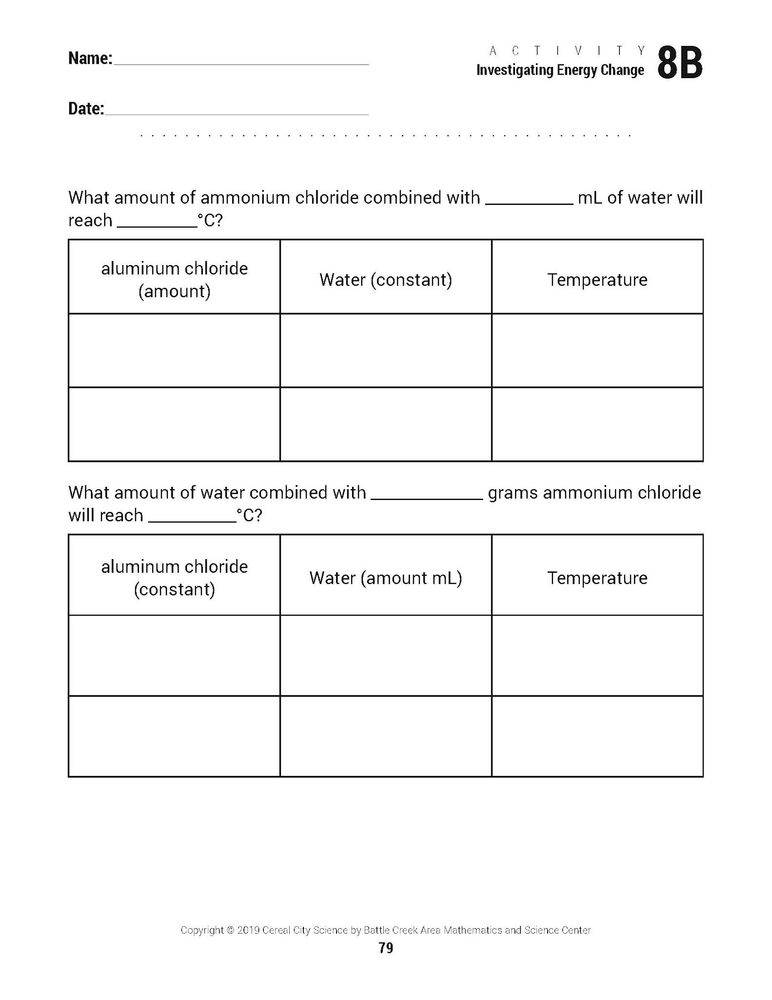
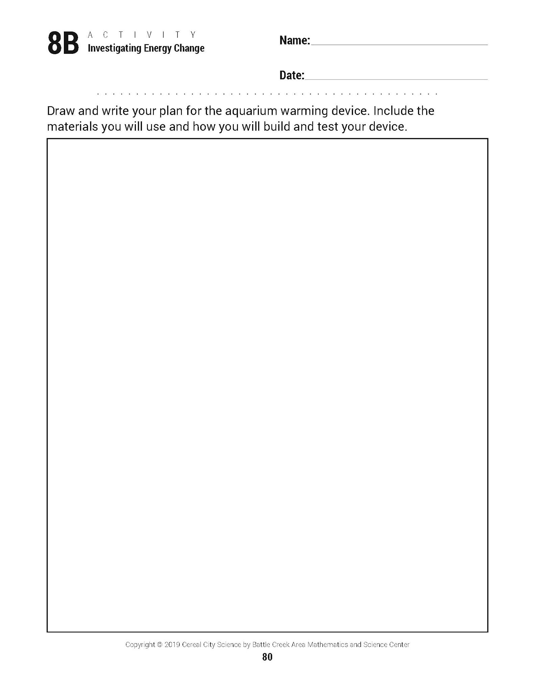
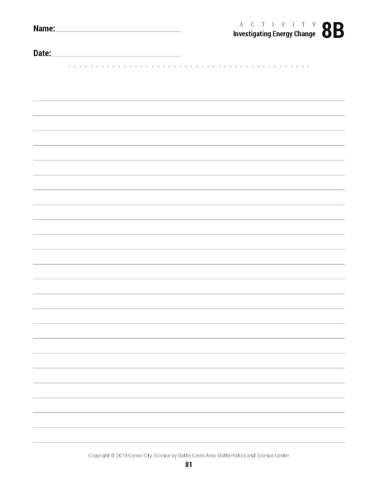

Discuss with your group your ideas about how hand warmers work.
1. What do you think makes a hand warmer work?
2. What are some qualities of a good hand warmer?
Student journal pages 75–81 • Select a page below to read its editable text.
Discuss with your group your ideas about how hand warmers work.
1. What do you think makes a hand warmer work?
2. What are some qualities of a good hand warmer?
This is the unmarked scanned page for checking original diagrams, exact wording, or layout. The editable HTML content is above.

You are a volunteer at the Shedd Aquarium in Chicago. The aquarium has just rescued some clown fish (similar to Nemo) from a rapidly disappearing coral reef off the coast of Australia and are ready to transport the fish to their new exhibit at the aquarium. The aquarium has informed you that they were flown overseas in a large heated tank to maintain tropical temperatures. Unfortunately, it is too large to transport the entire tank from the airport to the aquarium. Clown Fish come from a tropical ocean where they maintain a steady temperature of 72-77 degrees Fahrenheit, or about 22-26 degrees Celsius. In order to safely move the fish from the airport to the aquarium (about a 20 minute drive), they must maintain that temperature. You are tasked with developing a device that can be placed in smaller fish tanks to help maintain that temperature long enough to get the fish to their destination. Keep those fish alive!

This is the unmarked scanned page for checking original diagrams, exact wording, or layout. The editable HTML content is above.

Does the amount of calcium chloride change the temperature of the solution?
1. Pour 15 mL of water into each of two 9 oz. clear plastic cups.
2. Place a small thermometer in each cup and record the initial temperature in the chart on the following pages.
3. With the help of a partner and at the same time, add % tsp. calcium chloride to one cup and % tsp. of calcium chloride to the other cup.
4. With the thermometers still in the cups, gently swirl both cups and check the temperature of both. Record the highest final temperature each reaches.
Does the amount of water change the temperature?
1. Pour 15 mL of water into one small clear plastic cup.
2. Pour 30 mL of water into the other small clear plastic cup.
3. Place a small thermometer in each cup and record the initial temperature in the chart on the following pages.
4. With the help of a partner and at the same time, add % tsp. calcium chloride to each cup.
5. With the thermometers still in the cups, gently swirl both cups and check the temperature of both. Record the highest final temperature each reaches.
This is the unmarked scanned page for checking original diagrams, exact wording, or layout. The editable HTML content is above.

What amount of calcium chloride combined with ______ mL of water will reach ______ °C?
| Calcium chloride (amount) | Water (constant) | Temperature |
|---|---|---|
What amount of water combined with ______ grams calcium chloride will reach ______ °C?
| Calcium chloride (constant) | Water (amount mL) | Temperature |
|---|---|---|
This is the unmarked scanned page for checking original diagrams, exact wording, or layout. The editable HTML content is above.

What amount of ammonium chloride combined with ______ mL of water will reach ______ °C?
| aluminum chloride (amount) | Water (constant) | Temperature |
|---|---|---|
What amount of water combined with ______ grams ammonium chloride will reach ______ °C?
| aluminum chloride (constant) | Water (amount mL) | Temperature |
|---|---|---|
This is the unmarked scanned page for checking original diagrams, exact wording, or layout. The editable HTML content is above.

Draw and write your plan for the aquarium warming device. Include the materials you will use and how you will build and test your device.
This is the unmarked scanned page for checking original diagrams, exact wording, or layout. The editable HTML content is above.

This is the unmarked scanned page for checking original diagrams, exact wording, or layout. The editable HTML content is above.
